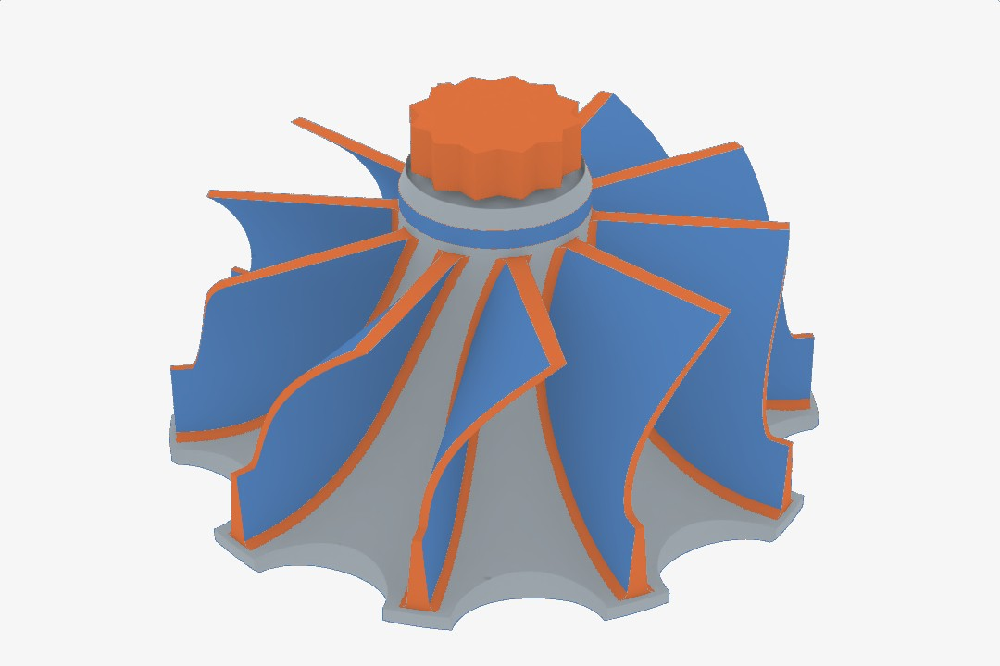
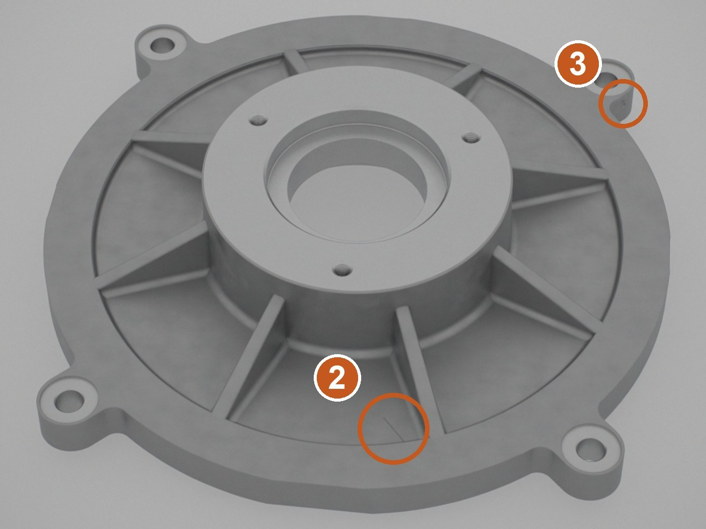

The idea
Write the standard's limits as rules attached to regions of the part's CAD model, and compute the verdict from them. The same defect can then pass at one quality level and fail at a stricter one, and every verdict points to the rule behind it. This is research in progress.
1Background
Most learned inspection is anomaly detection. A model learns what a good part looks like and flags what looks different. A factory does not accept or scrap a part because it looks different. It decides against a standard, at a quality level that the drawing or the contract names.
A standard states its limits by type of discontinuity, by size, by how many there are and by how close together they lie. ISO 5817, for example, sets three quality levels for imperfections in fusion welds: B, C and D, with B the strictest. An anomaly score carries none of this, so it cannot say whether a part meets level C.
The turbine-wheel inspection prototype also had only a few sample impellers to work with. A benchmark built from CAD can supply parts and defects in the numbers that real samples could not.
2What I am building
Standards as rules. Three public standards are compiled into a machine-readable rule language: ISO 5817 for welds, EN 1371-1 for penetrant testing of castings, and IACS UR W24 for cast copper alloy propellers. The rules are written over regions of the part's boundary representation (B-rep), the exact description of faces and edges that a CAD kernel stores. A region of the part can therefore carry its own limits.


A verdict that follows from the rule. The verdict is computed from four things about a discontinuity: its sign, its size band, the count and the spacing. Nothing else enters the decision, so each verdict can be traced to the rule that produced it.
The test. Swap the quality level on identical images, and the verdict has to flip where the standard says it should. A detector trained to find anomalies cannot pass this test, because its input has not changed.
3The benchmark
The benchmark is under construction. It covers eight part families that are cast, forged or machined, with about 50 CAD variants labelled by hand.


- Surface finish is conditioned on the manufacturing process, so a cast surface and a machined surface look different.
- Defects that have depth are modelled as true geometry in the part, and are not painted on as texture.
- Each part is imaged from several views under a photometric stack of lights, the same kind of capture the turbine-wheel prototype used.
4Where it comes from
The vision thread started with a camera rig that measures where its camera is, and continued with the turbine-wheel inspection prototype, where detections are registered to the part's CAD model. My current research takes the next step and attaches the acceptance rule to the CAD model too.
It shares one idea with the TE busbar system: a finding should arrive with the clause of the standard it comes from.